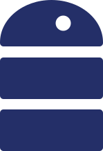
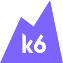

차세대 통합 메시징 플랫폼
- 팀 인원
- 7명 (BE 5명, FE 2명)
- 역할
- 개발 리더, PM/PA
- 기술
-
- Java 17
- Spring Boot 3.x
- Spring WebFlux
- Spring Cloud

R2DBC- MariaDB
- Redis
- RabbitMQ

k6
개요
약 300개 고객사가 이용하는 B2B 플랫폼으로, 월 N천만 건의 SMS, LMS, MMS, RCS, 알림톡을 처리하는 서비스입니다. 20년간 운영되어 온 레거시 시스템을 전면 개편하는 프로젝트로, C, Java, Python으로 나뉘어 운영되던 시스템을 Java와 Spring Cloud 기반의 MSA 재설계와 백엔드 서버 개발과 CI/CD 파이프라인을 구축 했습니다.
레거시 플랫폼 통합과 고도화
문제
- 서비스마다 개발 언어와 환경이 달라 문자를 처리하는 공통 기능임에도 각 환경에 맞는 방식으로 개발하고, Admin Web과 모니터링 등 운영 시스템도 개별적으로 관리되어 개발과 운영 리소스가 비효율적으로 소모
- Agent 방식보다는 간편한 API를 요구하는 고객사가 늘어남에따라 기존 Agent의 TCP 통신 규격을 맞춘 API가 아닌 접근성이 좋은 API가 필요
- 문자를 이동통신사에게 보내는 모듈의 Task Queue에 병목 현상으로 인한 서비스 지연 문제
해결
Java와 Spring Cloud 기반의 플랫폼 통합
각 서비스의 기획 문서와 코드를 분석해 공통 기능과 서비스별 고유 기능을 분류하고, 필요한 서비스만 독립적으로 개발하고 배포할 수 있도록 기능적 응집도를 고려한 MSA 서버 아키텍처를 설계했습니다.
공통 기능과 문자 유형별 전송 기능 분리
서비스마다 언어와 구현 방식이 달라, 마이크로서비스 설계에 앞서 소스 코드와 기능 명세서, 개발 일지를 검토하고 공통 기능과 서비스별 고유 기능을 분류했습니다.
기존 레거시 서비스에 있던 공통 기능인 발신번호 검증과 이력 관리 등은 역할별 공통 서비스로 통합하고, 문자 유형별 고유 기능을 분리했습니다.
Spring Cloud 도입
MSA 구성 도구를 검토하는 과정에서 팀에 익숙한 Spring Framework 기반의 Spring Cloud를 살펴봤습니다. 공식 문서와 예제 코드로 구현 방법을 확인하고, 실제 운영 사례와 이슈 대응 및 릴리스 이력을 검토해 팀의 기존 개발 경험을 활용할 수 있고 운영 중 문제에 대응할 참고 자료도 충분하다고 판단해 도입했습니다.
공식 문서 / 공식 예제 프로젝트 / 사람인의 API Gateway 구축 사례
- 클라이언트 요청을 안정적으로 처리하고 서버 부하를 분산하기 위해 API Gateway의 LoadBalancer 활용
- Discovery 기능의 가용성을 확보하기 위해 Eureka Server 3대를 클러스터로 구성
- 서비스별 공통 설정 파일을 Config Server에서 관리하여 서비스 인스턴스마다 설정 파일을 수정하는 반복 작업 감소
- Eureka의 인스턴스 조회 API를 활용해 서비스별 인스턴스 등록 현황과 상태를 확인하는 모니터링 구축
백엔드 서비스 개발
API Gateway


요청 인증과 고객사별 TPS 제한을 Gateway에서 공통으로 처리하도록 개발했습니다.
- 클라이언트 요청을 LoadBalancer를 통해 각 서비스 요청별로 부하분산 하도록 yaml 구성
- 인증 서버에서 발급한 JWT를 검증하는 Gateway Filter 구현
- 고객사별로 설정된 TPS에 맞춰 요청량을 제한하기 위해 RedisRateLimiter의 Token Bucket 적용
- 백엔드 서비스의 장애와 응답 지연에 대비해 Circuit Breaker 기반의 Fail-Fast 정책 적용
Message API Server

고객사의 문자 발송 요청을 접수하는 RESTful API 서버를 개발했습니다.
- SMS, LMS, MMS, RCS, 알림톡의 유형별 발송 API 설계 및 개발
- Jakarta Bean Validation 어노테이션을 활용한 문자 유형별 요청 규격 검사
- Redis SET NX를 활용한 메시지 중복 요청 검사
- 발송 요청을 내부 서비스에 전달하기 위해 Spring AMQP 기반의 RabbitMQ 이벤트 발행 기능 구현
- @RestControllerAdvice와 @ExceptionHandler를 활용해 요청 처리 중 발생하는 예외를 공통으로 처리하는 전역 예외 처리기 구현
Router
- 외부망별 계약 쿼터와 처리 가능한 TPS를 반영한 가중치 알고리즘을 적용하고, 전송 단가를 고려해 라우팅하도록 개선하여 레거시 대비 처리량 약 26% 향상, 전송 비용 30% 절감
- Spring AMQP 기반의 이벤트 소비 및 발행 기능 구현
Reporter
문자 발송 결과를 고객사의 Webhook으로 전달하는 서버를 개발했습니다.
- Spring WebFlux WebClient 기반의 Webhook 전송 모듈 구현 및 API 설계
- 고객사 서버의 응답 지연과 통신 실패에 대비해 Timeout, Retry, Circuit Breaker 정책 및 예외 처리 적용
- Spring AMQP 기반의 문자 발송 결과 이벤트 소비 기능 구현
DB Logger
문자 발송 요청, 외부망 접수, 최종 처리 결과를 기록하는 서버를 개발했습니다.
- 비동기 환경에서 이력 생성보다 갱신 이벤트가 먼저 도착하는 상황을 고려해, 서버의 예외 처리 대신 Upsert를 적용한 R2DBC 기반의 Non-Blocking 이력 저장 및 갱신 기능 구현
- Spring AMQP 기반의 이벤트 소비 기능 구현
Storage Server
MMS, RCS, 알림톡에 사용되는 첨부파일을 관리하는 서버입니다.
- 파일 업로드, 다운로드, 조회 API 설계 및 개발
- 첨부파일 바이너리로 인한 RabbitMQ의 부하를 줄이기 위해, 파일은 Storage에 저장하고 이벤트에는 파일 식별 Key만 전달하는 Claim Check Pattern 적용
- 동일한 파일이 반복 업로드될 때 중복 저장을 방지하기 위해 파일명, 확장자, MD5 해시값을 비교하는 검증 로직 구현
- 파일 다운로드 과정에서 발생하는 메모리 복사와 CPU 부하를 줄이기 위해 Zero-Copy 적용
OAuth 2.0 Server
문자 서비스 API를 사용하기위해 토큰을 관리하는 인증 서버입니다.
- Spring Security와 RSA 비대칭키 서명 기반의 JWT 인증 체계 구축
- Redis 기반 Refresh Token 저장소 구성 및 토큰 갱신 설계
- 블랙리스트 필터링을 통한 실시간 토큰 무효화 및 접근 제어 구현
- Reactive Redis 및 R2DBC 도입을 통한 I/O Non-Blocking 처리
Admin Server
고객 정보와 문자 처리 이력, 시스템 운영 데이터를 관리하는 내부용 Web 서버입니다.
- JPA를 활용한 회원 정보, 문자 처리 이력, 고객사별 이용 추이와 시간대별 이용 내역 조회 기능 개발
- 고객사 TPS 증설 승인 및 외부망 라우팅 정책 설정 기능 구현
- 관리자 계정과 접근 권한 설계
- 빠른 개발과 간편한 수정을 위해 Thymeleaf 기반의 화면 구성
RabbitMQ를 활용한 이벤트 통신 설계
- 발송 요청을 한 번 발행하면 DB Logger와 Router가 각각 처리할 수 있도록 Topic Exchange와 서비스별 Queue 구성
- Publisher Confirm으로 브로커의 수신 여부를 확인하고, 발행 실패에 대한 예외 처리 적용
- 비즈니스 로직이 완료된 뒤 Manual ACK를 전송해, 처리 도중 서버가 종료된 메시지는 재전달받도록 구성
- 서비스별 처리량에 맞춰 이벤트 소비자의 Prefetch를 조정해 메시지 수신량 제어
- 실패한 작업의 반복 처리가 신규 요청에 영향을 주지 않도록 DLX/DLQ로 재처리 메시지 분리
결과
반복 개발 감소와 서버 자원 확보
- 문자 유형마다 따로 반영하던 공통 기능의 변경 사항을 담당 서비스 한 곳에서 수정하도록 개선해, 환경별로 반복하던 분석과 개발 및 검증 작업 감소
- 플랫폼 통합 후 레거시 시스템을 정리하면서 하드웨어 102대 -> 23대 79대 감축
라우팅 개선으로 처리량 향상과 전송 비용 절감
- 외부망 세션별 처리 가능한 TPS에 맞춰 물량을 배분하도록 변경해 레거시 대비 처리량 약 26% 향상
- 계약 쿼터와 처리 가능량을 고려하고, 조건에 맞는 외부망 중 단가가 낮은 경로를 선택해 전송 비용 30% 절감
- 기존 라우팅 정책 관리를 관리자 Web UI로 통합하여 운영팀의 코드 수정 업무 해소
REST API 제공으로 고객사 연동 지원 업무 개선
- REST API로 연동한 고객사는 Agent 설치와 환경별 커스터마이징이 필요 없어, 이에 따른 원격 지원과 현장 지원 업무 해소
- 2024년 2월부터 2025년 5월까지 연동 관련 VOC 0건
MVC와 WebFlux 성능 비교
클라이언트에게 제공되는 문자 발송 API는 요청을 받아 이벤트를 생성하는 과정에서 Redis, DB, RabbitMQ에 대한 외부 I/O가 발생합니다. 이 흐름에서 대용량 트래픽을 처리할 때 어떤 프레임워크가 더 높은 처리량과 빠른 응답속도를 확보할 수 있는 지 Spring Webflux와 Spring MVC를 비교하는 부하 테스트를 진행하였습니다.
테스트 환경
| 항목 | 설정 |
|---|---|
| 서버 | Linux CentOS, 4 core |
| 실행 환경 | Java 17, Spring Boot 3 |
| JVM 힙 | 512 MB |
| DB | MariaDB |
| MVC 구성 | Tomcat, JDBC, HikariCP |
| WebFlux 구성 | Netty, R2DBC |
| DB 연결 풀 | 두 구현 모두 3,000 TPS는 250개, 5,000 TPS는 400개 |
| 측정 방식 | 별도 PC의 k6에서 부하 발생, 조건별 120초씩 3회 측정 |
5,000 TPS에서는 해당 하드웨어에서 높은 부하를 받았을 때 처리량과 응답 속도를 확인하고, 두 모델 모두 안정적으로 처리할 수 있는 3,000 TPS에서는 자원 사용량을 비교했습니다.
Tomcat 공식 문서의 요청 스레드 설정, DB Pool Size 가이드를 참고하여 tomcat-thread, db-pool-size를 모니터링 대시보드를 통해 최적의 값을 찾아 부하테스트를 진행했습니다.
성능 비교
아래는 부하 조건별 설정과 성능 비교 결과입니다. 3,000 TPS와 5,000 TPS는 목표 부하입니다.
3,000 TPS
| 지표 | MVC | WebFlux |
|---|---|---|
| Tomcat worker | 300개 | 해당 없음 |
| DB Pool Size | 250개 | 250개 |
| 평균 처리량 | 2,966.6 TPS | 2,993.1 TPSMVC 대비 0.9% 증가 |
| 평균 응답시간 | 115.3 ms | 80.2 msMVC 대비 30.4% 감소 |
| p95 | 432 ms | 129 msMVC 대비 70.1% 감소 |
| p99 | 561 ms | 230 msMVC 대비 59.0% 감소 |
| CPU 사용률 | 17.95% | 23.73% |
| 평균 힙 사용량 | 288.4 MB | 258.9 MBMVC 대비 10.2% 감소 |
5,000 TPS
| 지표 | MVC | WebFlux |
|---|---|---|
| Tomcat worker | 400개 | 해당 없음 |
| DB Pool Size | 400개 | 400개 |
| 평균 처리량 | 4,449.6 TPS | 4,820.5 TPSMVC 대비 8.3% 증가 |
| 평균 응답시간 | 594.0 ms | 257.8 msMVC 대비 56.6% 감소 |
| p95 | 943 ms | 641 msMVC 대비 32.0% 감소 |
| p99 | 1,625 ms | 797 msMVC 대비 51.0% 감소 |
| CPU 사용률 | 28.28% | 40.40% |
| 평균 힙 사용량 | 323.4 MB | 331.6 MB |
결과
3,000 TPS에서는 처리량이 비슷한 가운데 WebFlux의 p95가 432ms에서 129ms로 약 70.1% 단축됐습니다. CPU 사용률은 약 5.8%p 높았지만 평균 힙 사용량은 약 10.2% 낮아, 추가 CPU 사용과 응답시간 개선을 함께 고려했습니다.
5,000 TPS에서는 WebFlux 구성의 처리량이 약 8.3% 높았고, p99는 1,625ms에서 797ms로 약 51.0% 단축됐습니다. 두 구현 모두 목표 처리량에는 미치지 못했으나, 이 부하에서는 WebFlux 모델이 더 많은 요청을 처리하면서 응답 지연도 줄였습니다.
두 부하 조건의 결과를 바탕으로, I/O가 많은 문자 발송 API에는 WebFlux 구성이 적합하다고 판단했습니다.
배포 과정을 표준화하기 위한 CI/CD 파이프라인 구축
문제
- 소스와 빌드 파일이 개인 PC, SVN, 물리 서버에 분산되어 운영 중인 버전의 소스와 변경 이력을 확인하기 어려움
- 개발자가 로컬 또는 개발 서버에서 직접 빌드하고, 배포 서버에 접속해 파일을 업로드하는 수동 배포 방식
- 모놀리식 서버 재기동 시에 발송과 고객사 연결이 약 1~2분간 중단되어 배포 시간을 새벽으로 제한
해결
형상관리 개선
운영 버전의 소스와 변경 이력을 추적할 수 있도록, 차세대 프로젝트는 GitHub에서 소스를 관리하고 배포 버전에 릴리스 태그를 남겼습니다.
| 브랜치 | 용도 |
|---|---|
feature | 신규 기능 개발 |
hotfix | 긴급 수정 |
develop | 개발 서버 확인 |
staging | 운영 반영 전 검증 |
main | 운영 서버 배포 |
CI/CD 자동화
수동 업로드와 재기동을 자동화하기 위해, 저장소의 workflow 파일로 빌드부터 배포까지 관리할 수 있는 GitHub Actions를 선택했습니다.
폐쇄망의 온프레미스 서버에 접근할 수 있도록 사내망에 self-hosted runner 1대를 구성했습니다. 개발, 사전 검증, 운영 환경은 배포 대상만 달리하고, 배포 브랜치에 push하면 같은 절차가 실행되도록 했습니다.
배포 절차
배포 전에는 작업 시간대의 트래픽을 점검해 배포 가능 여부를 판단하고, 인스턴스를 한 대씩 교체하는 롤링 배포로 진행했습니다.
-
빌드와 테스트
Runner에서 빌드한 뒤 JUnit으로 API 요청과 응답, 예외 처리, RabbitMQ payload 규격을 검증하도록 구성했습니다. 테스트에 실패하면 서버에 반영하기 전에 배포를 중단합니다.
-
배포 대상 조회
서버가 추가되거나 IP가 변경될 때마다 workflow를 수정하지 않도록, Admin Server에서 배포 대상 IP를 조회했습니다. Eureka에 등록되지 않은 신규 서버에도 배포해야 하므로 운영팀이 관리하는 서버 정보를 기준으로 삼았습니다.
-
기존 요청 처리 후 새 버전 기동
대상 인스턴스에 Graceful Shutdown 신호를 전달하고, Eureka 등록 해제와 기존 요청 처리가 완료될 때까지 기다렸습니다. 이후 SSH/SCP로 새로운 JAR 파일을 전송하고 애플리케이션을 기동했습니다.
-
정상 기동 확인 후 다음 인스턴스 배포
Shell script로 프로세스 실행 여부를 확인하고, Actuator health API가
UP인지 점검했습니다. 새 버전이 정상적으로 기동되어 안정화되면 다음 인스턴스에 배포하고, 상태 확인에 실패하면 나머지 인스턴스의 배포를 중단하도록 구성했습니다.
배포 성공과 실패 결과는 Slack으로 전달하고, 상태 확인에 실패한 경우 해당 시점의 로그도 함께 전송했습니다.
배포 실패 시 담당자가 Git 태그를 지정해 rollback workflow를 실행하면, 해당 버전의 소스를 다시 빌드해 배포하도록 구성했습니다.
결과
수동 업로드와 재기동 작업 자동화
서버에 직접 접속해 파일을 업로드하고 재기동하던 작업을 자동화해, 배포 브랜치에 push하면 팀 공통 workflow로 서버 반영까지 진행하도록 개선했습니다.
운영 버전의 소스와 배포 이력 추적
GitHub의 소스 변경 내역과 릴리스 태그, workflow 실행 기록으로 운영에 반영한 버전과 변경 사항을 확인할 수 있게 됐습니다.
새벽 배포 제약 해소
서버 재기동으로 인한 서비스 중단 때문에 새벽에만 진행하던 배포를 트래픽 사전 점검을 거쳐 서비스 운영 중에도 진행할 수 있게 됐습니다.
모니터링 구축
문제
- 처리 중인 메시지 수에 따른 색상 변화와 프로세스 목록을 보고 담당자가 이상 여부를 직접 판단해야 하는 모니터링 방식
- 장애 알림이 사내 알림에 한정되어 장애 대상과 구체적인 상태를 확인하기 어려움
- 애플리케이션에서 수집하는 정보가 처리량, 동작 모듈, 라우팅 정보에 한정되어, 화면의 수치로 원인을 유추하거나 코드를 확인해야 하는 상황
해결
Actuator의 메트릭을 Prometheus에서 수집하고 Grafana 대시보드로 확인하도록 구성했습니다. 오류 알림은 Alertmanager를 통해 Slack으로 전달하도록 연동했습니다.
- Spring Cloud의 서비스 인스턴스 정보와 Actuator 기본 메트릭을 활용한 애플리케이션 상태 확인
- 서비스 인스턴스별 메시지 처리량 수집
- 하드웨어와 RabbitMQ, Redis, DB 상태 모니터링
결과
- 처리량을 중심으로 상태를 유추하던 방식에서, 애플리케이션과 인프라 지표를 함께 확인할 수 있도록 모니터링 범위 확대
- Redis, RabbitMQ, DB I/O 오류를 Slack으로 전달해, 담당자가 화면을 보고 이상을 발견하던 방식에서 오류 발생을 알림으로 인지할 수 있도록 개선